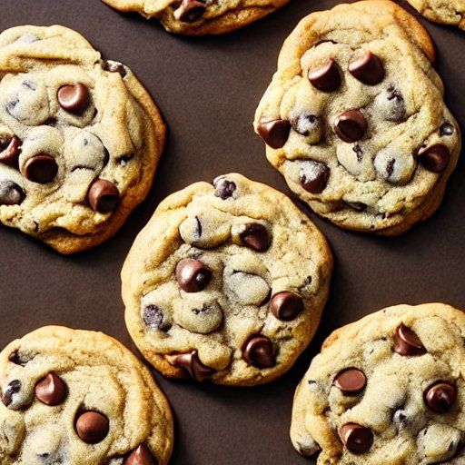

Biscuits tendres aux brisures de chocolat
Préparation: —
Cuisson: —
Total: —
Ingrédients
-
3/4 t de beurre

-
1 t de cassonade
-
1/2 t de sucre
-
1 c. à thé d'extrait de vanille
-
2 c. à soupe d'eau
-
2 œufs
-
2 1/4 t de farine
-
1 c. à thé de bicarbonate de soude
-
1 c. à thé de sel
-
1 1/8 t de brisures de chocolat
Instructions
Préchauffer le four à 180 °C (350 °F).
Dans un grand bol, crémer le beurre avec la cassonade et le sucre.
- 3/4 t de beurre
- 1 t de cassonade
- 1/2 t de sucre
Ajouter la vanille, l’eau et les œufs, puis bien mélanger.
- 1 c. à thé d'extrait de vanille
- 2 c. à soupe d'eau
- 2 œufs
Incorporer la farine, le bicarbonate de soude et le sel. Mélanger jusqu'à consistance homogène.
- 2 1/4 t de farine
- 1 c. à thé de bicarbonate de soude
- 1 c. à thé de sel
Ajouter les brisures de chocolat et mélanger délicatement.
- 1 1/8 t de brisures de chocolat
Déposer la pâte en boules sur une plaque anti-adhésive ou graissée. Cuire au four 10 à 12 minutes ou jusqu’à ce que les bords soient légèrement dorés.